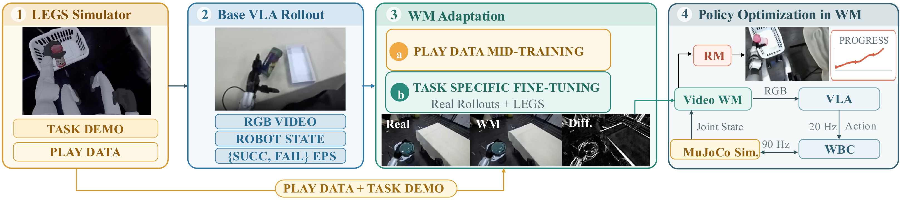
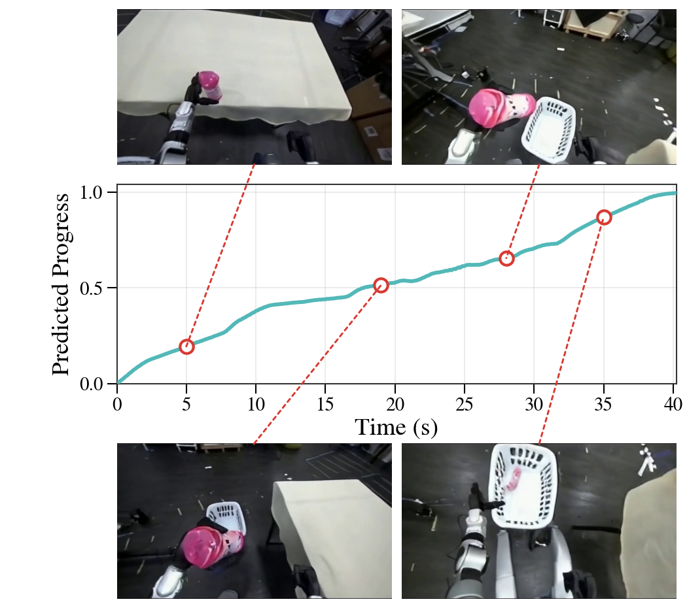

Simulate
The LEGS simulator generates whole-body task demonstrations and broad manipulation and locomotion play data.
Whole-body humanoid learning without teleoperation
Loco-Manipulation VLA Optimization inside a World Model
00
Reinforcement learning can improve vision-language-action policies beyond imitation, but real-robot exploration is costly and unsafe for humanoids, while direct optimization in reconstructed simulators can amplify sim-to-real errors. We present LMAO-World, a teleoperation-free pipeline that post-trains a synthetic-data humanoid VLA inside an action-conditioned video world model. A 3D Gaussian Splatting simulator supplies task demonstrations and manipulation and locomotion play data; 20 autonomous real-robot rollouts per task adapt the world model to deployment observations. Policy rollouts then couple generated video with whole-body dynamics and receive dense stage-aware progress rewards. Across three real-robot tasks, play data improves every evaluated world model metric, and DICE-RL raises mean success from 23.3% for behavior cloning to 75.0%.
01
Sim to dream to real

The LEGS simulator generates whole-body task demonstrations and broad manipulation and locomotion play data.
A shared world model is mid-trained on play data, then adapted to each task with synthetic demonstrations and autonomous real rollouts.
The VLA acts inside the adapted world model, while a stage-aware progress model supplies dense rewards for round-based RL.
02
LEGS simulator
Full-state planning supplies task data, while autonomous play data covers contact outcomes and locomotion-induced viewpoint changes.
Whole-body action sequences are generated from full-state planning and locomotion and manipulation primitives.
Randomized objects, grasp offsets, slips, misses, and collisions provide broad supervision for contact dynamics.
Approaches, turns, and long-range walking expose the model to large egocentric viewpoint changes.
03
World model adaptation
We replay held-out action trajectories and compare autoregressive world model predictions with temporally aligned ground-truth observations.
The interaction-region gain is consistently larger than the global PSNR gain, indicating that play data is particularly useful around the robot hands and manipulated objects.
04
Closed-loop policy improvement
The VLA predicts actions from generated observations, the world model advances under those actions, and the cycle repeats recursively. A progress model converts each generated trajectory into dense rewards.

05
Real-robot evaluation
World model and real-robot success rise together over 15 DICE-RL rounds, while direct simulator RL does not provide a reliable transfer signal.
| Method | Pick-and-Place | Pick-Turn-Place | Bimanual Basket | Mean |
|---|---|---|---|---|
| Behavior cloning | 40% | 20% | 10% | 23.3% |
| Real-robot RL | 60% | 45% | 40% | 48.3% |
| AWR | 75% | 70% | 70% | 71.7% |
| ReinFlow | 60% | 50% | 45% | 51.7% |
| DICE-RL | 85% | 75% | 65% | 75.0% |
06
Broad contact and locomotion experience improves world model fidelity and downstream optimization.
Step-level rewards extract learning signal from successful, failed, and partially completed rollouts.
Regenerating trajectories as the policy changes avoids optimizing against a stale behavior distribution.
07
Citation
@article{anonymous2026lmaoworld,
title = {LMAO-World: Loco-Manipulation VLA Optimization
inside a World Model},
author = {Anonymous Authors},
year = {2026}
}